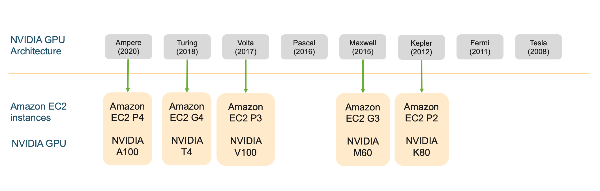
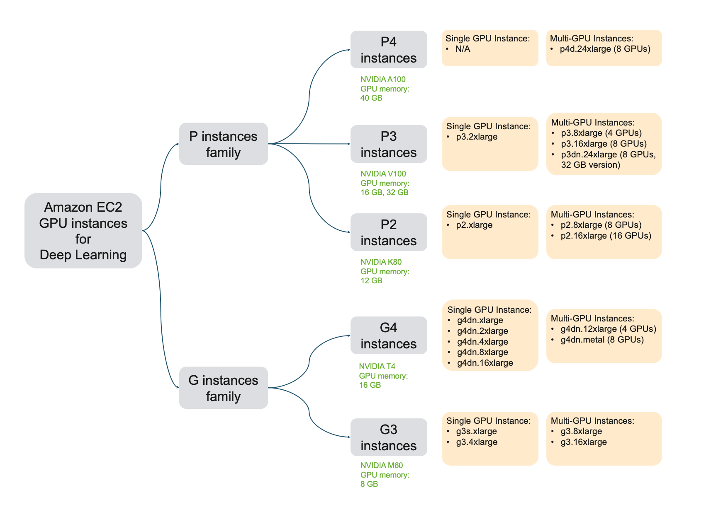
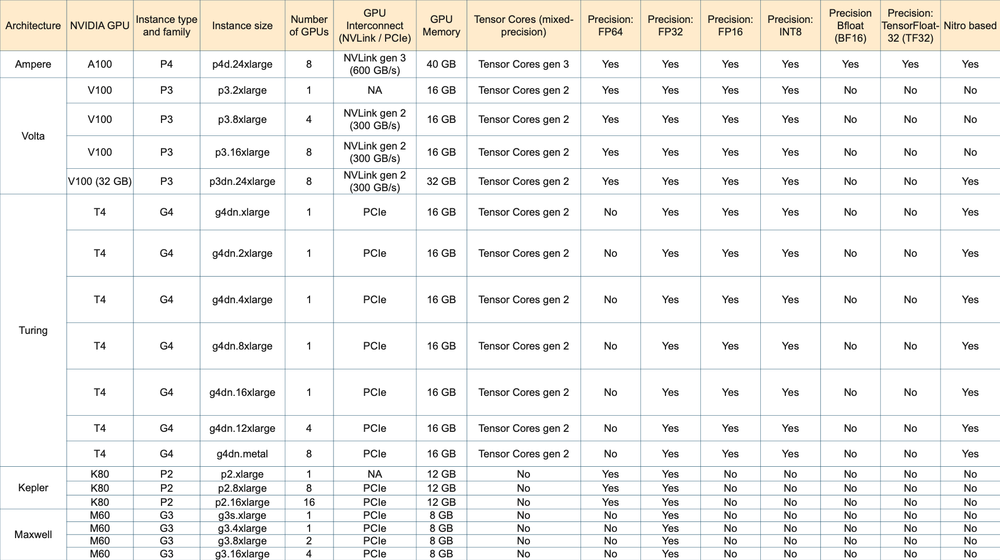

Năm 2021, công ty mình có làm việc với AWS để chuyển hệ thống từ Azure qua AWS. Đây là 1 bài về AWS ML instance review, được 1 Machine Learning Specialist nhận xét là best overview of the ML instance options in AWS. Mình tổng hợp lại để đọc luôn. Đây là bài gốc
Overview
Trước hết, ta đều biết rằng AWS có rất nhiều lựa chọn khi chọn GPU instances, về GPU VRAM (8, 16, 32), GPU architectures (Ampere, Turing, Volta, Maxwell, Kepler, note: card chơi game là Geforce, có GTX và RTX, RTX hỗ trợ half-precision, 5 loại đầu thì chưa rõ thông số lắm hehe), các đặc trưng kỹ thuật khác nhau (khả năng handle FP64, FP32, FP16, INT8, TensorCores, NVLink), số GPUs trên 1 instance (1, 2, 4, 8, 16).
Chính vì có nhiều lựa chọn như vậy, và khi build hệ thống training/inference, chúng ta không chỉ chọn mình GPU mà còn cả CPU, ram, network bandwidth các kiểu, nên thay vì chỉ chọn GPU, ta cần xem xét cả GPU instance.

Overview
Có nhiều họ trong các AWS instance, ví như trong việc tính toán bằng GPU, thì có họ G, P, F, Inf. Đây là bảng giới thiệu về họ G và P.

Bảng giới thiệu về họ G và P
Chúng ta đi sâu vào từng nhóm instance một.
Tips đọc tên
Mỗi instance có 1 cái tên dài dài, vd: p3.2xlarge, p3dn.24xlarge, p4d.24xlarge, inf1.xlarge, thì:
- phần trước chữ số kèm chữ số đầu tiên là họ Instance (vd: P3, P4, Inf1,…). P thì thiên về training, G thiên về graphic + inference, Inf là inference.
- phần tiếp theo là tên cụ thể trong họ. Tổng cả phần lại là family (P4, P3, Inf1,…). Đôi lúc có 1 số ký tự đánh dấu phía sau (chưa rõ nghĩa hehe). Số càng to là càng mới, càng mạnh hơn (và tốn tiền hơn lol). Cost effective thì tùy.
- Phần sau tên hầu hết là xlarge (chỉ có 1 cái metal). Thường thì đọc xlarge, 2xlarge, 4xlarge, 8xlarge và 24xlarge sẽ đoán được size, nhưng nó cũng có range lớn nên ước chừng vậy thôi.
P4: highest-performing DL training instance
P4 instance features at a glance:
- GPU Generation: NVIDIA Ampere
- Supported precision types: FP64, FP32, FP16, INT8, BF16, TF32, Tensor Cores 3rd generation(mixed-precision)
- GPU memory: 40 GB per GPU
- GPU interconnect: NVLink high-bandwidth interconnect, 3rd generation
Bọn này dùng A100 GPU. Chú ý, IEEE standard thì dùng FP32 (xảy ra trước DL era)(nguồn?). A100 thì hỗ trợ chuyển đổi half-precision (FP32 → FP16). Ngoài ra A100 thì support thêm 1 số dạng như BF16, TF32.
p4d.24xlarge
P4 chỉ có 1 instance là p4d.24xlarge. Rất mạnh, rất to.
Use cases: (very) high performance tasks.
P3: high performance and cost-effective DL training.
P3 instance features at a glance:
- GPU Generation: NVIDIA Volta
- Supported precision types: FP64, FP32, FP16, Tensor Cores (mixed-precision)
- GPU memory: 16 GB on
p3.2xlarge, p3.8xlarge, p3.16xlarge, 32 GB onp3dn.24xlarge - GPU interconnect: NVLink high-bandwidth interconnect, 2nd generation
Chú ý là 1 GPU sẽ có 16GB VRAM hoặc 32GB VRAM. P3 thì tính toán cũng nhanh, và nhiều options để lựa chọn hơn P4. Training thì có thể chọn P3.
p3.2xlarge: Best GPU instance for single GPU training
V100 thì nhanh chỉ thua có A100 thôi. Mà cái instance này cũng ổn cho các hệ thống nho nhỏ, không quá lớn (thì như vậy code cũng ez hơn nữa). Về cơ bản thì có thể sử dụng qua EC2 hoặc là SageMaker. Khá tuyệt.
p3.8xlarge and p3.16xlarge: Ideal GPU instance for small-scale multi-GPU training and running parallel experiments
Vì GPU có 16 VRAM, lại còn là nhiều GPU nữa.
p3dn.24xlarge: High-performance and cost effective training
Chỉ chậm hơn P4, nhưng rẻ hơn kha khá. Thêm nữa, nó và P4 là 2 loại mà có VRAM cực lớn (32GB và 40GB), vì vậy có thể wwork với những loại data dạng với, vd như 3D images.
G4: Best instance for cost-efficient deep learning training, and high-performance inference deployments
- GPU Generation: NVIDIA Turing
- Supported precision types: FP64, FP32, FP16, Tensor Cores (mixed-precision), INT8, INT4, INT1
- GPU memory: 16 GB (G4dn), 8GB (G4ad)
- GPU interconnect: PCIe
Chúng ta chú ý 1 điều, là lúc training, thường thì model weights và gradients thường được lưu trữ dưới dạng FP32, để có thể được chính xác hơn, nhưng trong lúc inference, thì tầm FP16 là đủ rồi, thậm chí INT8. Điều này có thể boost được inference performance. T100 có thể train, nhưng chậm hơn V100 và A100 rất nhiều.
Chú ý 1 điều là không nên dùng nhiều GPU ở G4 lắm, vì nó dùng PCIe để connect chứ không phải NVLink. Điều này nghĩa là multi-node/distributed training thì vẫn nên là cân nhắc P3 instance hơn.
G4dn family
Có nhiều option con. Thích hợp cho ML inference.
G4ad family
Có nhiều option con. G4ad instances provide the best price performance for graphics intensive applications in the cloud: remote graphics workstations, video transcoding, photo-realistic design, and game streaming in the cloud.
P2: rẻ mà hơi tệ
P2 instance features at a glance:
- GPU Generation: NVIDIA Kelper
- Supported precision types: FP64, FP32
- GPU memory: 12 GB
- GPU interconnect: PCIe
Kiến trúc K80 ra đời cũng lâu rồi, nên tuy rẻ nhưng cũng không đáng chú ý lắm. G4 sẽ phù hợp cho cost-effective tasks hơn.
G3: graphic workloads, consider P2 hoặc G4
G3 instance features at a glance:
- GPU Generation: NVIDIA Maxwell
- Supported precision types: FP32
- GPU memory: 8 GB
- GPU interconnect: PCIe
Chuyên cho các tác vụ graphic, dùng cho DL cũng được mà P2, G4 tốt hơn.
Để training thì: P3 > G4 > P2 > G3
(bonus) Inf1: chuyên cho inference
Mới ra. Custom chip chuyên cho inference. Nhìn chung thì có tốc độ inference nhanh nhất, cost-effective nhất khi chạy cho scale lớn. Với scale nhỏ thì nên dùng G4 hơn (vì đơn giản hơn, cost ok, và các model đã support đủ, Inf1 mới ra nên vẫn chưa support đủ).
The list
- Highest performing GPU instance on AWS. Period:
p4d.24xlarge(8 x A100 GPUs) - High performance and cost effective:
p3dn.24xlarge(8 x V100 GPUs) - Best single GPU training performance:
p3.2xlarge(V100, 16 GB GPU) - Best single-GPU instance for developing, testing and prototyping:
g4dn.xlarge(T4, 16 GB GPU). Considerg4dn.(2/4/8/16)xlargefor more vCPUs and higher system memory. - Best multi-GPU instance for cost effective single node training and running parallel experiments:
p3.8xlarge(4 V100 GPUs, 16 GB per GPU),p3.16xlarge(8 GPUs, 16 GB per GPU) - Best multi-GPU, multi-node distributed training performance:
p4d.24xlarge(8 A100 GPUs, 40GB per GPU, 400 Gbps aggregate network bandwidth) - Best single-GPU instance for inference deployments: G4 instance type. Choose instance size
g4dn.(2/4/8/16)xlargebased on pre- and post-processing steps in your deployed application. - I need the most GPU memory I can get for large models:
p4d.24xlarge(8 A100, 40GB per GPU) - I need access to Tensor Cores for mixed-precision training: P4, P3 and G4 instance types. Choose the instance size based on your model size and application.
- I need access to double precision (FP64) for HPC and deep learning: P4, P3, P2 instance types. Choose the instance size based on your application.
- I need 8 bit integer precision (INT8) for inference: G4 instance type. Choose instance size based on pre- and post-processing steps in your deployed application.
- I need access to half precision (FP16) for inference: P4, P3, G4 instance type. Choose the instance size based on your application.
- I want GPU acceleration for inference but don’t need a full GPU: Use Amazon Elastic Inference and attach just the right amount of GPU acceleration you need.
- I want the best performance on any GPU instance: Use AWS Deep Learning AMI and AWS Deep Learning Containers
- I want to save money: Use Spot Instances and Managed Spot Training on Amazon SageMaker. Choose Amazon Elastic Inference for models that don’t take advantage of a full GPU.

Brief info of clusters